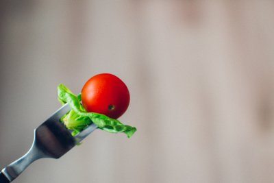

Все секреты правильного питания при тренировках: как и когда нужно есть
 Не все начинающие спортсмены знают, что тренировки – это только 1 важная составляющая на пути к достижению желаемых результатов. Вторым компонентом является правильное питание.
Не все начинающие спортсмены знают, что тренировки – это только 1 важная составляющая на пути к достижению желаемых результатов. Вторым компонентом является правильное питание.
Профессиональные спортсмены в первую очередь составляют свой рацион питания, а комплекс упражнений отодвигается на второй план. И это правильный подход к делу.
Для похудения или наращивания мышц, а не потери сознания от голода в спортзале, нужно знать, как правильно питаться.
Содержание- Как правильно питаться во время занятий спортом: основы рациона
- Важность режима приема пищи при физических агрузках
- Почему нужно пить много воды
- Полезные и запрещенные продукты
- Главное – баланс
- Вопросы калорийности продуктов
- Особенности диеты
- При силовых упражнениях для женщин и мужчин
- При формировании рельефа
- Для похудения и сжигания жира
- При занятиях фитнесом
- Правильное дневное меню
- Завтрак
- Обед
- Ужин
- Перекусы до и после активных упражнений
- Полезные советы
- Полезное видео
Как правильно питаться во время занятий спортом: основы рациона
Еда – это ключ к успеху, который поможет быстрее достигнуть желаемых целей. Независимо от поставленных задач (сбросить лишние килограммы или набрать вес за счет мышц), именно правильно составленный рацион обеспечит успех. Прочитайте нашу статью, как начать правильно питаться.
Да, регулярно тренироваться нужно, но при нарушении правил питания вы никогда не добьетесь результатов.Если калорий мало, то тренировки не будут эффективным, из-за чего человек будет ощущать сильную усталость. Слишком калорийная пища тоже плохо отражается на фигуре и состоянии. Если вы всерьез решили заниматься и нацелены на долгосрочный результат, то переходите на новый стиль питания.
Если калорий мало, то тренировки не будут эффективным, из-за чего человек будет ощущать сильную усталость. Слишком калорийная пища тоже плохо отражается на фигуре и состоянии. Если вы всерьез решили заниматься и нацелены на долгосрочный результат, то переходите на новый стиль питания.
Во время составления меню нужно учитывать вид спорта, которым будет заниматься человек, и уровень его тренированности. В идеале меню будущему спортсмену должен подобрать диетолог или профессиональный тренер.
 Однако существуют основные принципы питания спортсменов, которые подходят всем:
- Голодать во время занятий категорически противопоказано.
- Запрещено переедать или перекусывать «на ходу».
- Составить меню помогут специалисты в зависимости от целей и уровня физической подготовки человека.
- Во время трапезы нужно концентрироваться исключительно на еде, а не на телевизоре или телефонном разговоре.
- Продукты пережевывайте не менее 30 раз, чтобы не перегружать пищеварительные органы.
- Принимать пищу нужно только при появлении голода, трапезничать за компанию или от скуки настоятельно не рекомендуется.
Кроме того, спортсмен всегда должен контролировать количество калорий в рационе.
Внимание!Строга диета плохо влияет на спортсменов, у них ослабляется иммунитет, ухудшается состояние волос, кожи, ногтей, возникают гормональные нарушения и т.д.
Важность режима приема пищи при физических нагрузках
Начинающему спортсмену нужно корректировать распорядок приема пищи с учетом времени и количества занятий спортом.
Также следует учитывать свое рабочее время и отдых, чтобы организм успел восстановиться.Перед тренировкой нужно зарядиться порцией белка. За 2-3 часа до похода в спортзал нужно употребить пищу, богатую на белки. Но если из-за рабочего графика вы не можете приготовить полноценное блюдо, то употребите фрукты или кисломолочные продукты. Читайте подробнее, что есть перед тренировкой, чтобы сжигать жир.
Подкрепиться следует за 30-40 минут до тренировок. Спустя 1-2 часа после спортзала нужно плотно покушать.
Это интересно!Сразу после упражнений организм продолжает расщеплять остатки веществ, которые выходят из мышц, поэтому не стоит перегружать его сытным обедом. Если в этот день вы не планируете заниматься спортом, то откажитесь от перекуса.
Источником энергии, которая так нужна для тренировок, является глюкоза. Это вещество можно получить из следующих продуктов: сахар, выпечка, шоколад, сладкие газированные напитки.
Но правильнее извлекать глюкозу из сложных углеводов: крупа, фрукты, бобовые. Количество быстрых углеводов нужно сократить до минимума, отдав предпочтение сложным. Так, вся энергия потратится на работу мышц, а жиры не будут скапливаться в организме.
Питаться нужно часто (5-6 раз в день) с интервалом в 3 часа, но минимальными порциями. Тогда вы насытите организм полезными веществами, энергией и не будете ощущать голода.
Почему нужно пить много воды
Для правильного метаболизма нужно употреблять побольше жидкости. Во время спортивных занятий из-за чрезмерных нагрузок начинает выделяться пот, как следствие, организм теряет много жидкости.
Эти потери нужно восполнить, так как могут нарушиться химические реакции, и организм не будет получать энергию.Многие начинающие спортсмены не знают, нужно ли пить воду во время занятий в тренажерном зале для лучшего процесса похудения.
Опытные тренеры настоятельно рекомендуют не забывать о соблюдении водного баланса. Но делать это нужно небольшими порциями (до 100 мл за раз). Норма для профессиональных спортсменов – от 3 до 3,5 л.
Это интересно!Взвешивание поможет определить, хватает ли в организме жидкости. Для этого нужно встать на весы до и после тренировки. Если разница в весе от 500 г и более, то в организме не хватает жидкости, а значит, нужно употреблять больше воды. Также состояние водного баланса можно определить по цвету мочи: если она яркая, то нужно увеличить суточный объем жидкости.
Спортсменам рекомендуется пить фильтрованную, минеральную воду, фреши, компоты или витаминно-минеральные напитки. Чтобы восполнить запасы жидкости в организме, рекомендуется пить небольшими глотками (20-25 мл) во время тренировки. Общий объем воды или другого напитка за все время занятий должен составлять 200-250 мл. После выполнения комплекса упражнений человек может выпить 350-400 мл жидкости.
Полезные и запрещенные продукты
Правильные углеводы насыщают организм энергией, которой часто не хватает во время тренировок. Наиболее полезными считаются сложные углеводы, к ним относят сладкую картошку, бурый рис, овсяную крупу, цельнозерновой хлеб, брокколи, шпинат и т.д.
Свежие фрукты содержат много сахаров, поэтому их количество в рационе нужно контролировать.Белки восстанавливают и ускоряют рост мышц. Лучшие источники качественных протеинов: курятина, индюшатина, яичные белки, соя и продукты из нее, а также белая рыба. Дополнить рацион можно протеиновыми коктейлями для похудения и укрепления мышц.
Чтобы получить красивое подтянутое тело, нужно употреблять полезные жиры: семена льна, авокадо, оливковое масло. Они заряжают организм энергией. Главное – соблюдать умеренность.
Рацион можно дополнить арахисовым, оливковым, миндальным маслом. Также жиры можно получить из яиц, мяса и рыбы.
Чтобы не свести все усилия на нет, нужно исключить из меню такие продукты:
- Белый хлеб, выпечка (сдобное, песочное или дрожжевое тесто).
- Кондитерские изделия.
- Спиртные напитки.
- Фаст-фуд.
- Еда быстрого приготовления.
- Магазинные соки, газировки.
- Тонизирующие напитки (кофе, крепкий черный чай, какао).
- Консервированные, копченые изделия, соленья.
- Магазинные соусы.
- Жареная, жирная, острая пища.
- Колбасные изделия.
Главное – баланс
Спортсмену следует обращать внимание на размер порций еды. Определить нужную дозу не тяжело. За один раз человек может съесть белковой пищи размером с ладонь и сложных углеводов – 2 ладони.
Дважды или трижды за сутки трапезу нужно дополнять полезными жирами. Например, 5 мл масла оливок и льна для заправки блюд или небольшой бутерброд с арахисовым или миндальным маслом.
За день можно употребить 1-2 порции фруктов, а овощи могут составлять практически половину суточного рациона. Они содержат ценные витамины, минералы, клетчатку.
Вопросы калорийности продуктов
Взрослый человек должен потреблять 2200 ккал за сутки. Спортсмен, который работает над набором мышечной массы, должен получать 3000 ккал. Это средние показатели, окончательно определить суточное количество калорий поможет вычислить диетолог или тренер.
Если вы хотите похудеть, то это не значит, что нужно соблюдать строгую диету, хотя периодические голодовки не помешают. Чтобы снизить вес, вам нужно тратить больше энергии, чем вы потребляете. В день из количества калорий для худеющих нужно вычесть от 200 до 500 ккал.
Если ваша цель – нарастить мышцы, то нужно составить такой рацион, который будет содержать больше калорий, чем вы сжигаете.
Сытная еда даст больше энергии, которая необходима для интенсивных тренировок. Тогда нужно увеличить количество калорий на 200-500. Однако калории нужно добавлять постепенно и включить в программу тренировок кардиоупражнения.
Это важно!Обязательно взвешивайтесь как минимум 1 раз в неделю в одно и то же время. Это нужно, чтобы понять, насколько правильно вы составили рацион, и при необходимости подкорректировать его.
Особенности диеты
Результаты тренировок на 20% зависят от физических нагрузок и на 80% – от правильного питания. Поэтому следует запомнить следующие особенности питания во время занятий спортом при похудении:
- Строгая диета и спорт несовместимы. При скудном питании человек быстро устает, и начинают истончаться мышцы.
- Перед спортзалом нужно есть за 1,5-2 часа.
- Если вы стремитесь похудеть, то не ешьте после упражнений углеводы.
- Через пару часов после занятий нужно употреблять белковую пищу.
- Уменьшите количество жиров в рационе. Рекомендуется заменить животные жиры на растительные. Употреблять такую пищу лучше до 12 часов дня.
- Пейте больше жидкости, при ее недостатке замедляется метаболизм, и уменьшается выносливость.
При силовых упражнениях для женщин и мужчин
Чтобы контролировать правильность питания и состава меню, нужно вести дневник питания и тренировок, готовить дома и взвешивать все ингредиенты. Так, вы сможете вычислить, сколько белков, жиров и углеводов содержит 1 порция.
Чтобы силовые тренировки для похудения прошли удачно, нужно соблюдать следующие правила правильного питания:
- Увеличьте суммарную калорийность питания на 15-20%.
- Наблюдайте за процентом содержания питательных веществ в меню. На жиры уходит третья часть калорий, количество белков – 2 г на 1 кг общего веса, а остальное – на углеводы.
- Перед тренировкой употребляйте пищу, богатую на сложные углеводы.
- Принимайте спортивные добавки.
- Используйте аминокислоты ВСАА, чтобы насытить организм энергией.
- Чтобы компенсировать недостаток энергии сразу после занятий, можно выпить коктейль с белками и простыми углеводами.
Важно помнить!Спортивные добавки не могут заменить полноценное питание. Протеиновые коктейли и аминокислоты можно использовать до, во время и после занятий, чтобы получить энергию и ускорить рост мышечной массы. В остальное время употребляйте правильную пищу при силовых нагрузках.
При формировании рельефа
Чтобы контролировать правильность питания и состава меню, нужно вести дневник питания и тренировок, готовить дома и взвешивать все ингредиенты. Так, вы сможете вычислить, сколько белков, жиров и углеводов содержит 1 порция.
При работе на рельеф мышц нужно следовать таким рекомендациям:
- Планируйте рацион так, чтобы на 1 кг веса приходилось 2 г белка.
- Уменьшите суточную норму калорий на 10-30%.
- Питайтесь дробно и небольшими порциями.
- Ешьте за 3 часа до занятий и спустя 1,5-2 часа после них. Спортивные напитки можно употреблять во время занятий.
- На протяжении всего периода «сушки» принимайте витаминно-минеральные комплексы, так как мышцы страдают от дефицита полезных веществ.
Для похудения и сжигания жира
Во время похудения и сохранения мышечной массы нужно придерживаться следующих правил правильного питания:
- Употребляйте на 20% меньше калорий, чем израсходуете.
- Ешьте чаще, но маленькими порциями.
- Потребляйте больше пищи, содержащей белка.
- Откажитесь от напитков, богатых на углеводы.
При занятиях фитнесом
Особенности правильного питания для девушек во время занятий фитнесом таковы:
- Принимайте пищу за 1,5-2 часа до спортзала.
- Если поесть перед тренировкой не получается, то за полчаса до спортзала выпейте белково-углеводный коктейль.
- о время занятий пейте воду маленькими глотками с интервалом в 15 минут.
- Сразу после спортзала можно съесть около 100 г быстрых углеводов. Однако если вы хотите похудеть, то не стоит этого делать.
- Полноценно покушать можно спустя 2 часа после фитнеса.
- Ешьте часто и маленькими порциями.
Правильное дневное меню
Завтрак спортсмена должен быть сытным. Например, каши, которые содержат сложные углеводы, они надолго утоляют чувство голода. В кашу можно добавить ягоды, фрукты, сухофрукты или зелень.
Также для утренней трапезы подойдет белковый омлет с овощами, нежирный творог с ягодами или молочный коктейль с фруктами.
На обед можно съесть суп с овощами, а на второе – мясо или рыбу с овощами. Продукты можно отварить, запечь или приготовить на пару. Сначала можно съесть суп-пюре, а потом – запеканку с овощами и мясом.
Для ужина подойдет рыба, овощи, кисломолочные продукты, бобовые. Можно приготовить тушеную рыбу, запеканку из творога (несладкую) или гороховую кашу с яйцом. Вечерний белок должен легко усваиваться, поэтому от мяса лучше отказаться.
В качестве перекуса можно использовать фрукты, натуральный йогурт, ягоды, орехи, сухофрукты, творог. Сладкое лучше перекинуть на первую половину дня.
Завтрак
Особенности правильного питания для девушек во время занятий фитнесом таковы:
- Овсянка или гречка на воде.
- Тост (из цельнозернового хлеба), вареное яйцо.
- Бутерброд (нежирное мясо, рыба, сыр, зелень, овощи, листья салата).
- Омлет.
- Овощной салат с натуральным йогуртом или сметаной.
- Творог со сметаной, фруктами.
Обед
Дневная трапеза должна быть самой питательной.
Варианты обедов:
- Суп-пюре, заправленный нежирной сметаной.
- Тушеное мясо и гарнир.
- Макароны с сыром и овощами.
- Пюре из картошки и мясо.
- Запеканка из овощей.
- Суп с курицей.
- Вареная рыба с гарниром.
- Салат с овощами и мясом.
- Котлеты на пару и гарнир.
Каши можно дополнять молоком, орехами, сухофруктами, медом.
Запить завтрак можно йогуртом, кефиром, зеленым чаем, компотом или травяным чаем.
Ужин
Вечерняя трапеза должен содержать меньше всего калорий:
- Паровые овощи и кусочек нежирного мяса.
- Тушеная рыба, рис.
- Отварная крольчатина, каша или овощи.
- Творог с измельченной зеленью.
- Запеканка из творога.
- Омлет с помидорами и паприкой.
- Вареная телятина, овощной салат.
- Салат из фруктов или овощей.
- Рагу с овощами.
Запить ужин можно молоком или продуктами из него, фрешем, морсом, компотом и т.д.
Перекусы до и после активных упражнений
Основные приемы пищи можно разбавить следующими вариантами перекусов:
- Стакан кефира.
- 50 г черного шоколада и яблоко.
- Хлебцы из рисовой или гречневой муки с творогом.
- Горсть орехов или сухофруктов.
- Овсяное печенье, йогурт.
- Сырые овощи или фрукты.
За один раз можно съесть фрукт или овощ размером с кулак, 220 мл кисломолочного продукта, рыбу или мясо размером с ладонь.
Полезные советы
Чтобы быстрее достигнуть желаемых результатов, нужно изучить рекомендации профессиональных тренеров и диетологов:
- Если ваша цель – похудеть, то пополняйте меню новыми рецептами. При однообразном питании высок риск сорваться, тогда все результаты сойдут на нет.
- Спортсменам, которые хотят избавиться от лишних килограммов, нужно полностью исключить из рациона быстрые углеводы.
- Тщательно пережевывайте пищу, чтобы мозг получил информацию о насыщении.
- Трапезничайте с интервалом в 2-3 часа, чтобы контролировать аппетит и избежать переедания.
- Периодически (1 раз в 10 дней) устраивайте себе «разгрузку», когда вы сможете полакомиться любимыми блюдами.
- Чтобы быстрее набрать мышечную массу, налегайте на белки и медленные углеводы.
- Если хотите быстрее набрать вес, то вам нужно усиленно тренироваться и питаться.
- Спортивное питание необходимо для роста мышц.
- Чтобы избежать потерь мышечной массы, ешьте 6-7 раз за сутки.
- Включайте в рацион только натуральные свежие продукты.
- Избегайте мест и ситуаций, где вы можете нарушить пищевые привычки.
- Не спешите наедаться сразу после тренировки, сначала выпейте стакан теплой воды и прогуляйтесь.
- Принимайте витаминно-минеральные комплексы, они помогут восстановиться после тренировок, ускорят рост мышц и выработку энергии.